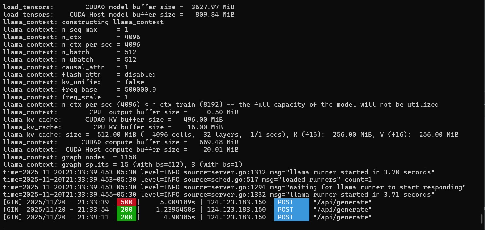
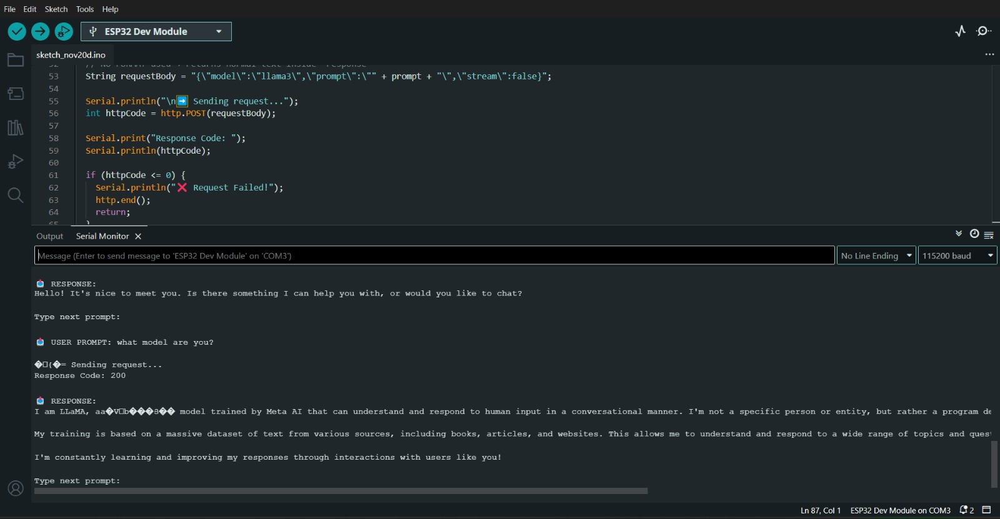
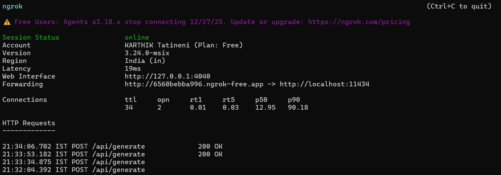

ESP32 Local AI (Ollama Integration)



This project showcases a powerful integration between the ESP32 and
Ollama — a local LLM engine running on a computer.
The ESP32 sends a prompt to the Ollama server through an ngrok-exposed endpoint
and receives the generated AI response directly on the microcontroller.
This allows the ESP32 to communicate with advanced language models like LLaMA, Phi, Mistral, and Gemma without relying on cloud services. The system works completely over local hardware, making it fast, private, and ideal for embedded AI applications.
With this setup, the ESP32 becomes a lightweight AI-enabled device capable of sending queries, controlling responses, and interacting with local LLMs. The project works with:
- Ngrok to expose the Ollama API
- HTTP-based request/response system
- ESP32 for sending prompt data
- Any Ollama-supported AI model
This project demonstrates how compact IoT boards like the ESP32 can be used to interact with modern AI systems, creating a bridge between embedded hardware and powerful local machine-learning models.